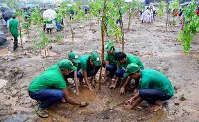
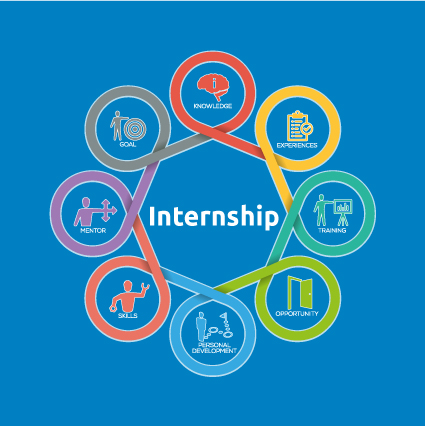

Project TREW

=> TREW is a Scottish word "ˈtrü" which
means Believe and Trust.
So we do believe
that everyone can:
- Plant more trees
- Recycle waste
- Save Electricity
- Save Water
Project Manager
Responsibilities
Hiring & Management
Hire and Manage 40 interns for 2 Months.
Implement TREW effectively

proper implementation Of project TREW.
Event Planning
Planning and execution of events,donation drives and capacicty building training.
Handling Social Media
Handle Infintree Foundation Official Media.
Internship Month 1
Doing Work for month 1.
Internsip Month 2
Doing work for month 2.
Internship Month 1:
- Initiate Hiring process and hire 40 or more interns.
- Manage interns database and issue offer letters
- Split the hired interns into teams.
- Planning of 1 month Environmental internship for the hired interns.
- Collection and management of funds.
Internship Month 2: 
- Effective Implementation of TREW.
- Collect Intern Weekly Reports
- Conduct weekly webinar session for all interns for capacity building and project discussion.
- Planning and execution of two TREW events.
- Plantation and Donation Drive
“Never doubt that a small group of
thoughtful, committed,citizens can change
the world.
Indeed, it is the only thing that
ever has.”
― Margaret Mead